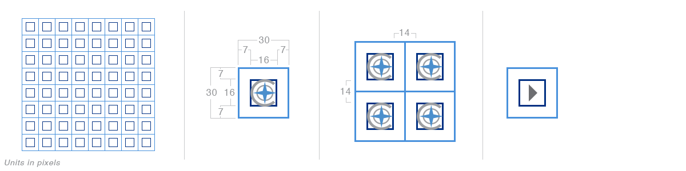

ChathamDirect features the use of a CSS sprite to generate the icons find throughout the site. The usage of this helps improve upon the time required maintaining the image assets, getting items into production, and most importantly, page load times for the client due to a reduction in HTTP requests (you can read up on that here). Shown here are the icons built from the sprite along with rules for using them.
No use currently.
Forward pointer used on the sidebar tabs.
No use currently.
Backward pointer used on the sidebar back button.
Used to take the user to the last page in the pagination controls.
Used to take the user to the first page in the pagination controls.
Used for actions that allow a user to upload files to the system.
Allows a user to download files to their machine. Exceptions exist for some files.
No use currently.
Primarily used in forward progress buttons.
No use currently.
Primarily used in backward progress buttons.
No use currently.
Used on collapsable sections that are closed.
Used on collapsable sections that are open.
No use currently.
No use currently.
No use currently.
No use currently.
No use currently.
Alerts the user to controls that allow them to change an item's settings.
Used to nest sets of controls. Typically only on the generic control set.
Allows certain data sets to be increased to their max allowable number.
No use currently.
Lets a user replicate certain processes like refreshing.
Removes any changes a user may have made to a data set.
Used for increasing the value of a data set.
Used for reducing the value of a data set.
Used to close certain items. Primarily used on the popups.
Limited usage. Lets a user see sets of template data.
Alerts the user to any data sets that may have documents with them.
Allows the user to change certain data sets. Typically a selection-based control.
Limited usage. Opens a calendar.
No use currently.
No use currently.
Primarily used in the site's search bar.
Alerts the user to any items that are connected to their account.
Limited use. Allows the user to expand documentation on certain data sets.
No use currently.
Lets the user see marriage data for certain items.
Used for creating connections between data sets or files.
Used for removing connections between data sets or files.
Expands certain data sets to show extra informaion.
Changes certain data sets to allow the user a broad view of data.
Lets a user change an item's visibility from hidden to visible.
Lets a user change an item's visibility from visible to hidden.
Allows a user to put certain items into a group.
Used in areas where multi-grouping is allowed.
Shows a data set that is currently ascending.
Used in areas where multiple sets of data can be sorted.
Shows a data set that is currently descending.
Used in areas where multiple sets of data can be sorted.
No use currently.
Changes the view of a data set to be in a table form.
Changes the view of a data set to be in graph form.
Changes the view of a data set to be in a percentage.
Changes the view of a data set to be in exact amounts.
Allows a user to download contact details.
Lets a user delete items from data sets. Typically a selection-based control.
Lets a user reject items from data sets. Typically a selection-based control.
Lets a user approve items from data sets. Typically a selection-based control.
Used for data sets that can be downloaded to a user's machine as an Excel file.
Used for data sets that can be downloaded to a user's machine as a Word file.
Highlights an item that is currently not used often by a user.
Highlights an item that currently is used often by a user.
Allows for dragging of certain items.
Typical use is to highlight an item that was added to the system by Chatham.
Typical use is to highlight an item that was added to the system by Chatham.
The sprite is built on a 30px grid with icons filling a 16px space in the center of each grid unit. This leaves 7px of free space around the icon area in all directions. In any instance where a button needs to be smaller, the grid setup allows for 14px of free space between each graphic element. Generally though, sizes should be maintained even in cases where the icon is smaller than it's 16px parent. 
Certain icons will require their base styles to be changed based on where they are located within the website. Also, some may even have expanded functionality depending on how they are being used. Shown here are a few common examples you may find when building pages.
The sidebar's icon set will generally keep the same 30px size but have it's border and :hover state removed as is the case with the pointers and carets used on the tabs.
A common occurrence in the section headers is the appearance of the generic controller. In the below example, the controller holds only one button, the Download as Excel file button.
If necessary, this controller may need to be expanded to hold a set of interactions for it's accompanying section. When this occurs, the generic controller turns into a drop down list as shown below.
Certain sections will also require there to be section-specific functionality be added to the header. In this case, they should appear just to the left of the generic controls. Shown here are also two buttons that function as a toggle. The View As Graph/Table has no border to separate the two and has the selected button highlighted with a background color.
Many ChathamDirect tables offer the user additional interactions that only appear after they have selected an item. Here is an example of buttons that could appear after a user has selected an item in the set of data that accompanies this header.
Style overrides on any icons appearing in the rows are fairly simple. Icons here require that their :hover states and borders be removed.
Often throughout ChathamDirect it is requried to use plain text buttons to perform certain actions. Our generic buttons should typically follow the grid for a one column width. These are normally used in the footers of pages or popups. Shown here are a few common instances.